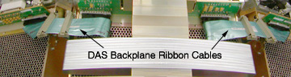
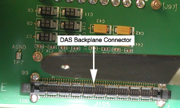
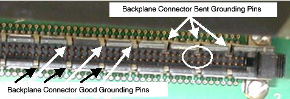
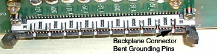
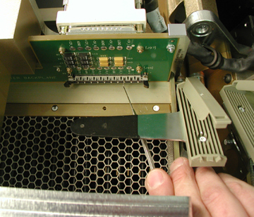

Operating Documentation
Direction 5114045-800, Rev# 10
LightSpeed 4.X Service Information (Advanced)
Operating Documentation |
This module shows a common failure mode of the MDAS backplane ribbon cable connections on the backplane itself.
The ribbon cable connections between the DAS chassis’ are susceptible to damage when disconnecting and reconnecting the ribbon cables.
Illustration 1: DAS Backplane Ribbon Cables

Illustration 2 shows the backplane connector itself. The connector housing is seen as many black plastic guides with grounding pins between each plastic segment. The grounding pins are what can cause problems if they become bent into the connector signal pins instead of staying on the outside of the ribbon cable connector. A careful examination of this picture will show 3 bent grounding pins on the top edge to the far right side.
Illustration 2: DAS Backplane Connector

Illustration 3 shows an exploded view of the connector that shows the bent pins in a close up view. All the other ground pins are in their proper position to stay on the outside edge of the ribbon cable connector. Note that the bent pins will contact and short signal pins for this ribbon cable.
Illustration 3: Bent Grounding Pins

The error signature can’t be stated as a single problem. The actual problem seen depends on which signal lines are shorted and how severe is the mechanical problem.
You may see DAS card specific errors, communication errors, etc. The only definitive statement is that anytime a ribbon cable is removed and reinstalled, this problem may occur if you are not very careful while reinstalling the connector into the backplane.
A good rule of thumb to follow is to watch carefully as you push in the backplane connector and make sure, at least on top, that you can see all the grounding pins on the outside of the connector.
Illustration 4 shows a top view in which the far right top grounding pin is easily seen as bent and the two pins next to it are also bent but not as extreme.
Illustration 4: Top View of Backplane Connector

If the pins start to bend and are caught before the ribbon cable is pushed fully in, repair is much easier to achieve. The goal is to pull the grounding pin forward and up to straighten it as much as possible out of the way of the ribbon cable connector without bending the signal pins.
Illustration 5 illustrates the use of a angled dental pick for reaching in and pulling out and up on the bent grounding pin.
Illustration 5: Dental Pick Repair Example

Something with a very small end like a dental pick must be used. Small screwdrivers and needle nose pliers typically still have a head too large to use without bending the signal pins. If a signal pin is bent, it can be straightened but there is a risk of breaking it off, which then requires a backplane replacement. The best advice is to be slow and careful when inserting the ribbon cable into this connector.